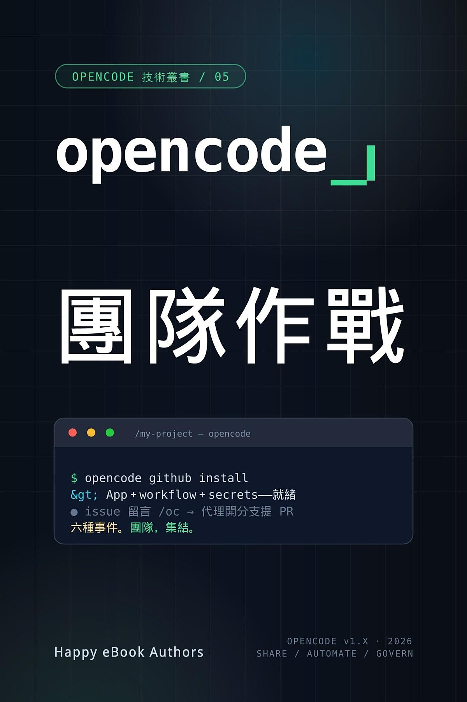

電子書
OpenCode 團隊作戰
從個人效率到組織級 AI 工程化

OpenCode 團隊作戰
從個人效率到組織級 AI 工程化
《OpenCode 團隊作戰》是「OpenCode 技術叢書」第五冊（完結篇）。前四冊解決個人會用、懂原理、能擴充；這一冊解決組織怎麼落地：會話資產化、分享與遠距協作、GitHub/GitLab 平台自動化、模型供給治理，直到企業級部署。 延續系列鐵律「只寫能驗證的事」：全部 CLI 命令實機驗證、九份官方文檔逐字核對、stats 成本報表與 export 匯出格式附真實輸出樣本。 ・從 me 到 we——安裝生命週期、會話即資產、成本報表